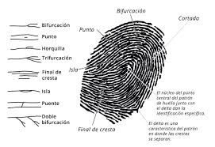

Huellas Dactilares
Comúnmente este método se ocupa para plasmar las huellas tanto de los dedos como de las palmas. Esto sirve para la identificación ya que cada una de ellas es única teniendo así patrones diferentes.

Revista Digital - Licenciatura en Criminología
Es un curso o actividad académica que busca conectar la teoría aprendida en el semestre con la práctica profesional. Este seminario permite a los estudiantes aplicar sus conocimientos en situaciones reales, desarrollando habilidades prácticas y fortaleciendo la comprensión de su campo profesional.
Comúnmente este método se ocupa para plasmar las huellas tanto de los dedos como de las palmas. Esto sirve para la identificación ya que cada una de ellas es única teniendo así patrones diferentes.
Este método de identificación es relevante ya que el diente al ser el elemento del cuerpo más resistente, nos lleva a tener un poco más de posibilidades para hallar a las personas y teniendo así un expediente clínico es mucho más fácil. Identificando qué dientes estaban desde el post mortem y que dientes en antemortem así también la posible causa de pérdida.
El levantamiento de huellas dentro de un área boscosa es indispensable ya que así podremos tener información de que tipo de calzado se utilizó para dichos actos, tanto como la marca y el tamaño del pie y así también la posible posición en la que se desarrolló la escena.

Se llevó a cabo la entrega de fichas de identificación a algunos padres en el kinder, está dándoles un contexto previo del porqué sus hijos deben de tener al alcance un número de teléfono o referencias de cómo llegar a su casa ya que es indispensable esa información y así poder prevenir el extravío.
Se abordó una obra de teatro a los niños del kinder, dándoles a entender la importancia de conocer los datos de sus familiares y no irse con cualquier persona que se encuentre en la calle, ya que les pueden hacer daño.
La identificación humana es la esencia misma de nuestra existencia, la capacidad de reconocernos y ser reconocidos, de construir una identidad única y significativa
La identificación humana en los adultos mayores es un acto de amor y respeto, porque reconocer su identidad es honrar su historia, su dignidad y su lugar en la sociedad
Fue concientizar sobre la importancia de la identificación en casos de desaparición de adultos mayores, promoviendo estrategias para reconocer sus:
No nos critique profe

Escanéalo para ver el libro desde tu celular 📱
Buenas tardes a todos los presentes, antes de iniciar con la presentación de los proyectos realizados por parte de los alumnos de quinto semestre, es importante que escaneen el código QR que los va a redirigir a la página de proyectos de praxis profesional que hemos realizado a lo largo de nuestra estancia en la universidad, y a su vez se dirijan al apartado de periódico digital nombrado Constructo Universitario donde observarán a detalle los proyectos que a continuación presentaremos.
Es un curso o actividad académica que busca conectar la teoría aprendida en el semestre con la práctica profesional. Este seminario permite a los estudiantes aplicar sus conocimientos en situaciones reales, desarrollando habilidades prácticas y fortaleciendo la comprensión de su campo profesional.
Información académica y actividades universitarias
Haz clic en el código QR para agrandarlo
Nuestro periódico universitario "Constructo Universitario" es una publicación digital que recopila las experiencias, investigaciones y proyectos desarrollados por los estudiantes de la Licenciatura en Criminología durante su formación académica.
Artículos científicos, investigaciones y ensayos desarrollados por nuestros estudiantes
Documentación detallada de los proyectos aplicados en comunidades e instituciones
Relatos de las prácticas profesionales y casos de estudio reales
Escanea el código QR con tu dispositivo móvil